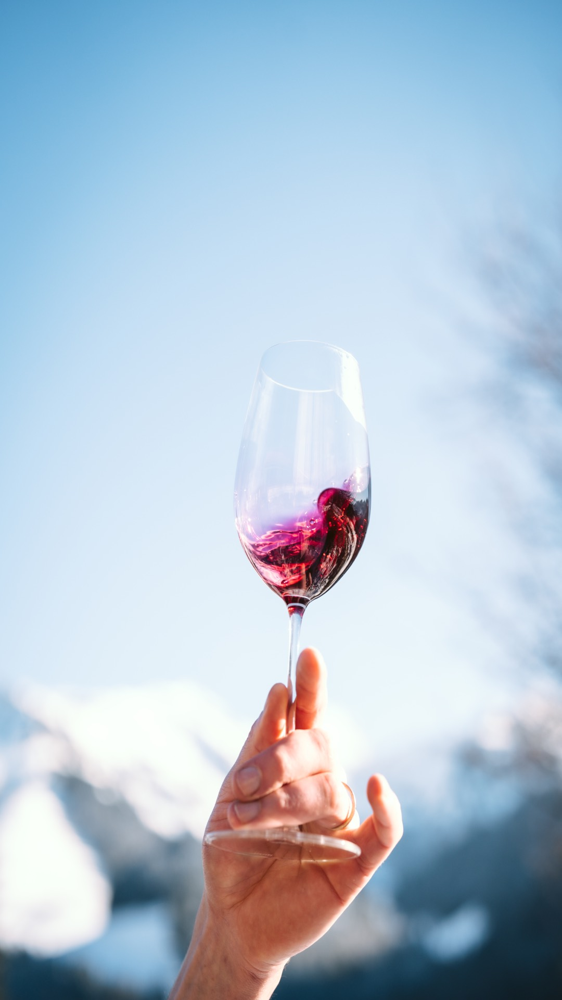
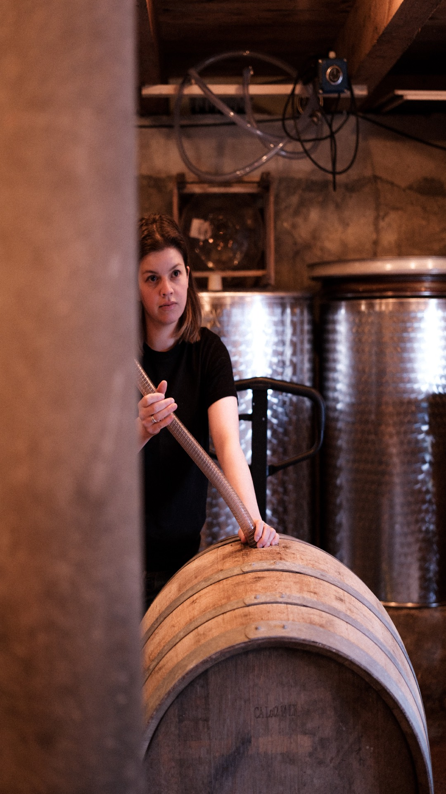

Les Vins

Les raisins sont récoltés à la main et soigneusement triés directement à la vigne. La fermentation se fait en levures indigènes, pour une expression authentique du terroir. Les vins sont ensuite élevés pendant quelques mois en barriques, sur lies, afin de favoriser leur complexité. La mise en bouteille se fait à la chèvre à deux Becs directement depuis la barrique. Pour mon premier millésime, le seul ajout a été de 15 mg de SO2 à la mise en bouteille. Les vins sont ensuite élevés quelques mois supplémentaires en bouteilles avant leur mise à la vente.
